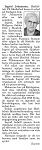
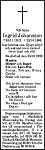

Ingrid Maria Hällgren
Blev 85 år.
| Född: | 1913-11-26 Stenbrånet 1, Bastuträsk kbfd, Norsjö sn. [1] |
|---|
| Död: | 1999-10-22 Norrböleg 35 A, Skellefteå, Sankt Olovs fs, Skellefteå kn. [2] |
|---|
| Vigsel: | 1937-04-29 Sörböle, Skellefteå lfs, Skellefteå sn. [3] | Borgerlig vigsel.
Henfrid Alfonso Johansson, Montör, Nygatan 67, Skellefteå stad och Ingrid Maria Hällgren, Hem.äg.dotter i Sörböle.
Vigselförrättare: Landsfiskal T. Renman, Skellefteå.
|
|---|
| Levde: | 1946 Böle 4:59, Sörböle, Sunnanå mcp, Skellefteå lfs, skellefteå sn. [4] | |
|---|
| Barn: |
|---|
| Siv Inger Maria Johansson (1946 - ) |
Personhistoria
| Årtal | Ålder | Händelse |
|---|
| 1913 |
|
Födelse 1913-11-26 Stenbrånet 1, Bastuträsk kbfd, Norsjö sn [1] |
| 1916 |
2 år |
Brodern Gustaf Arnold Hällgren föds 1916-02-27 Stenbrånet 1, Bastuträsk kbfd, Norsjö sn [1] |
| 1917 |
3 år |
Brodern Sten Ingvar Hällgren föds 1917-09-20 Stenbrånet 1, Bastuträsk kbfd, Norsjö sn [1] |
| 1920 |
6 år |
Systern Vera Amalia Hällgren föds 1920-07-17 Sörböle 2, Skellefteå lfs, Skellefteå sn [5] |
| 1923 |
9 år |
Systern Gerda Viktoria Hällgren föds 1923-01-13 Sörböle 2, Skellefteå lfs, Skellefteå sn [5] |
| 1924 |
10 år |
Fadern Olof Sten Olofsson Hällgren dör 1924-10-18 Sörböle 2, Skellefteå lfs, Skellefteå sn [6] |
| 1928 |
14 år |
Brodern Oskar Vilhelm Hällgren dör 1928-01-20 Sörböle 2, Skellefteå lfs, Skellefteå sn [7] |
| 1937 |
23 år |
Vigsel Henfrid Alfonso Johansson 1937-04-29 Sörböle, Skellefteå lfs, Skellefteå sn [3] |
| 1946 |
|
Levde Henfrid Alfonso Johansson 1946 Böle 4:59, Sörböle, Sunnanå mcp, Skellefteå lfs, skellefteå sn [4] |
| 1946 |
32 år |
Dottern Siv Inger Maria Johansson föds 1946-04-04 Böle 4:59, Sunnanå, Skellefteå lfs, Skellefteå sn [4] |
| 1947 |
33 år |
Modern Maria Viktoria Lindström dör 1947-08-13 Sörböle 2, Skellefteå lfs, Skellefteå sn [8] |
| 1978 |
64 år |
Maken Henfrid Alfonso Johansson dör 1978-07-02 Björkg 8, Skellefteå, Skellefteå lfs, Skellefteå kn [9] |
| 1980 |
66 år |
Brodern Sten Ingvar Hällgren dör 1980-08-16 Kungsgårdsv 33, Grubbe, Umeå, Umeå lfs, Umeå kn [10] |
| 1999 |
85 år |
Död 1999-10-22 Norrböleg 35 A, Skellefteå, Sankt Olovs fs, Skellefteå kn [2] |
Källor
| [1] | Bastuträsks kbfd (AC) AIIa:1 (1912-1928) Bild 2830 / sid 975 |
| |
| | |
| [2] | RTB 99 |
| |
| | |
| [3] | SCB Vigda AC Skellefteå lfs 47/1937, Skellefteå landsförsamling (AC) AIIa:22 (1912-1926) Bild 1490 / sid 143 |
| |
| | |
| [4] | Mtl Sveriges befolkning 1950 |
| |
| | |
| [5] | Skellefteå landsförsamling (AC) AIIa:22 (1912-1926) Bild 1490 / sid 143 |
| |
| | |
| [6] | Skellefteå landsförsamling (AC) F:8 (1921-1935) 272/1924 Bild 1150, AIIa:22 (1912-1926) Bild 1490 / sid 143 |
| |
| | |
| [7] | Skellefteå landsförsamling (AC) F:8 (1921-1935) Bild 2060, AIIa:22 (1912-1926) 11/1928 Bild 1490 / sid 143 |
| |
| | |
| [8] | NV Dödsannons 1947-08-15 |
| |
| | |
| [9] | RTB 78 / SPAR 80 |
| |
| | |
| [10] | RTB 80 / SPAR 90 |
| |
|
|  |
| 1999-10-26. Norra Västerbotten |
| |
|  |
| 1999-10-26. Norra Västerbotten |
|
{kind=link}
{kind=link}